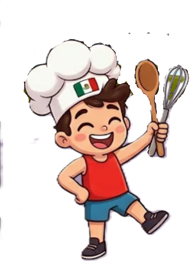
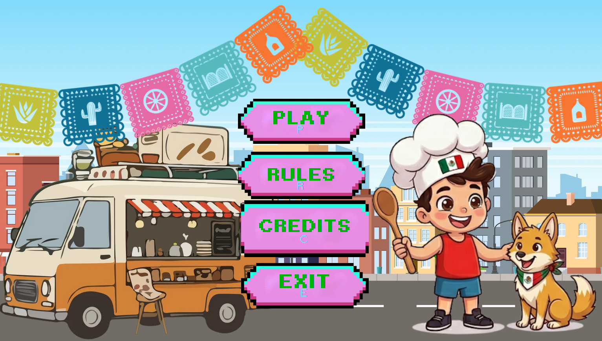

Juan Garnachas es un proyecto que se realizo con tiempo, dedicacion y esfuerzo por 4 personas que aman lo que hacen, 4 estudiantes que dia a dia dieron un extra para poder conseguir el resultado que ahora tienen el honor de compartir con toda la comunidad de Prepa 6, esperan que este sea de su agrado y a su vez que los motive a no dejar de lado nuestro increible Estudio Tecnino en Computacion.
Eres un joven con muchas ganas de emprender pero lamentablemente no tienes recursos aunque recuerdas que hace algunos años tu abuela afortunadamente te heredo un food truck y con eso comenzaras tu pequeño gran emprendimiento en el mundo de las garnachas esperando que en un futuro puedas tener un negocio gigante y reconocido por todo el mundo.
Una vez que ya sabemos un poco mas sobre la historia del juego tenemos que saber cuales son nuestros objetivos por que y para que estamos en esta increible mision.Entre ellos se nos dictaminan solo uno el cual es tan importante como el juego el cual es triunfar en el mundo de las garnachas y no caer en banca rota durante el proceso de crecimiento de este negocio.
El juego se construye de algunos niveles, cada uno de ellos comprende una parte unica y esencial del juego a traves de los cuales se tienen que atravesar distintos obstaculos y a su vez se pondran a prueba dos de los valores mas importantes como lo son la paciencia y adaptabilidad. Este juego se compone de 4 niveles y cada uno aumenta la dificultad segun se avanza entre niveles pues los pedidos cada ves son mas y las resetas que se preparan se complican un poco pero no se hacen tan imposibles para que sea facil de pasar y avanzar entre cada uno de los niveles.
